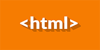
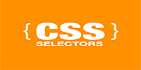
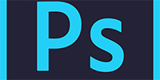
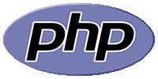
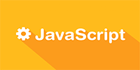

ВАЖНО: Для максимального удобства просмотра видео-трансляций в живом времени воспользуйтесь специальной для этого страницей.
Убедиться, что сейчас трансляция идёт можно по лампочке вверху страницы, когда начнётся - лампочка загорится зеленым светом!
На указанной странице можно максимально удобно настроить стрим благодаря 3 полям вверху страницы, которые отвечают за: ширину экрана трансляции, высоту экрана трансляции (можно уместить чаты в 1 строчку, при расширении чаты будут переходить на новую строчку и тогда будет более компактный вариант).
Под чатами есть блокнот, который существует для заметок во время живой трансляции. Последний параметр настраивает именно высоту данного блока, так что сделайте размеры максимально удобными для Вас и пользуйтесь виртуальным блокнотом.
Если произвойдет зависание браузера или случайной его перезагрузки - блокнот сохранит набранный в нём текст и Вы ничего не потеряете. По окончанию трансляции все Ваши заметки скопируйте в отдельный файл с названием урока для того, чтобы ничего не забыть!
По возможности максимально всё конспектируйте.Спасибо за внимание, далее обычный текст с моими трансляциями.
Мой сайт c пройденными уроками:
school-php.com
Приветствую будущих коллег.
Произошел запуск современных курсов веб-программирования абсолютно бесплатно, целью которых воспитать новую грамотную в программировании молодежь.
Видео-курсы будут иметь необычный новый формат, а именно:
- Ведущий назначает время и дату проведения следующего урока, и каждый желающий сможет зайти на канал и наблюдать за уроком в живом времени.
- Все уроки будут записываться на канале и быть в открытом доступе, кроме этого будут так же залиты на персональныйбазо хостинг в качестве зеркала и на youtube.
- Каждый желающий НОВИЧОК может в момент проведения урока задать свой личный вопрос, попросить уточнить какой-то определенный момент или прокомментировать или разжевать какой-то определенный участок материала.
- Каждый желающий ЭКСПЕРТ может в момент проведения урока исправить или уточнить определенную деталь, это значит, что любой из вас может приложить свою капельку в создание абсолютно-идеальных курсов для новичков.
- В конце урока будет дано домашнее задание для выполнения. Выполнив задание (по желанию) можно отправить на указанный e-mail решение для ИНДИВИДУАЛЬНОЙ ОЦЕНКИ выполненной работы. Так же если Вы смотрите в записи данный урок, то можете отправить решение задачи, и Ваше решение будет рассмотрено ИНДИВИДУАЛЬНО в любой период времени. Хочу заметить, что форматы принимаемых файлов ТОЛЬКО: HTML, CSS, JS, PHP, то есть никаких архивов, архивы рассмотрены не будут.
- В начале урока следующего возможно будет рассмотрено решение домашнего задания ИЛИ будут уточнены некоторые нюансы по прошлому уроку, то есть любые замечания принимаются.
Мы изучим
-

-

-

-

-
-

Изучая основы верстки мы плавно перейдем к созданию макетов и завершением у нас будет верстка полноценного макета. Изучая основы PHP + MySQL мы создадим простой и удобный макет CMS и FrameWork, на базе которого будет наш первый полноценный сайт, включающий в себя модули: новостей, блогов, админки, личного кабинета, статичных страниц. По завершению данного курса Вы без труда сможете браться за сайты-визитки, интернет-магазины, изучать современные CMS или FrameWork, и самое главное, перейти к профессиональному программированию. Я сделаю из Вас Juniour-программистов, но при одном условии, Вы будете добровольно смотреть все курсы и выполнять, порой, огромные домашние задания!
Сразу появится вопрос, какой профит (польза) будет лично мне за проведение таких курсов? Я собираюсь дать на основном сайте (сайт бесплатных курсов, никакой другой информации) контекстную рекламу, а основным доходом - донат, то есть добровольные пожертвования и благодарности моих учеников! Если я смогу Вас научить, значит, вполне честно, отблагодарить меня будет с первой з/п, с первого сайта. Но это всё абсолютно добровольное! И последнее, данный курс будет основан на современном программировании. Сейчас видео-курсы состоят из трех видов:
- Маленькие огрызки, 10 часов на программирование, что, несомненно, очень мало для ЛЮБОГО новичка, за этот период невозможно выучить основу.
- Устарелые курсы, такие как "Попов", или же похожие. Дело в том, что те знания достаточно устарели, о чём только свидетельствует надпись на официальном сайте PHP, что некоторые функции считаются устаревшими и ими пользоваться нельзя. (Пример: mysql_*), а значит буквально через год никто не сможет по тем курсам обучаться.
- Платные курсы, такие как "курсы от Специалиста", где качественные знания можно получить только посещая их, а не смотреть сворованный повтор без части уроков или домашних заданий.
Всё, Вам всё нравится и Вы хотите стать программистами, тогда Вам необходимо установить следующие программы:
-

FireFox или Chrome с плагином flash, чтобы можно было смотреть видео в реальном времени. Проверить любое видео с сайта justin.tv
-
IDE-редактор, лично я пользуюсь DreamWeaver, что и Вам советую, но так же подойдут Eclipse, notepad++, и другие.
-
Photoshop
-
пакет Denwer http://www.denwer.ru/ , если возникнут трудности с пониманием, то на офф.сайте есть видео-урок (не мой).